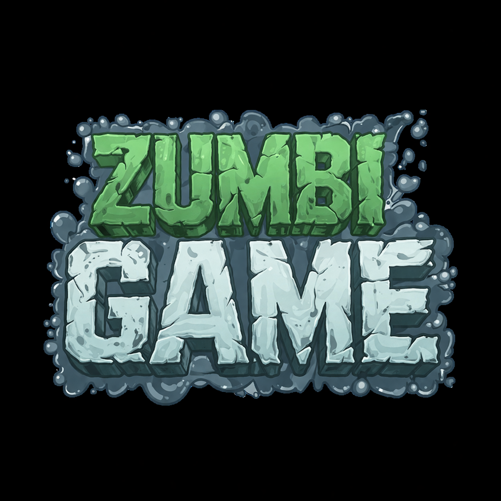

O Zumbi GameArte foi desenvolvido utilizando HTML, CSS e JavaScript, com o objetivo de criar um jogo de sobrevivência que roda diretamente no navegador.
No jogo, o jogador precisa desviar de obstáculos, sobreviver aos perigos do cenário e enfrentar desafios em um mundo dominado por zumbis.
Cada fase traz novos desafios que testam a velocidade, atenção e reflexo do jogador.